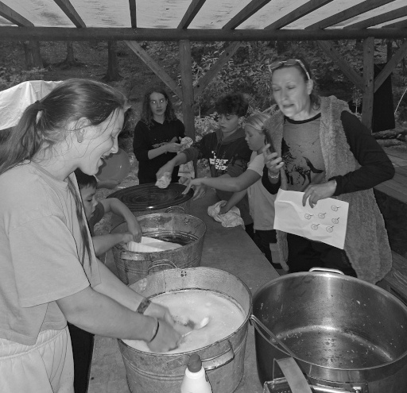
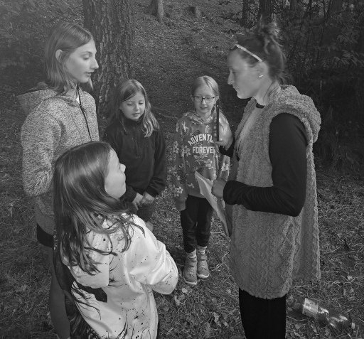
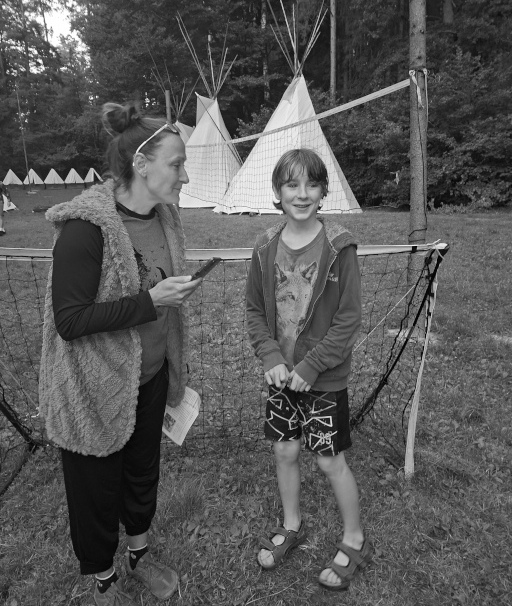
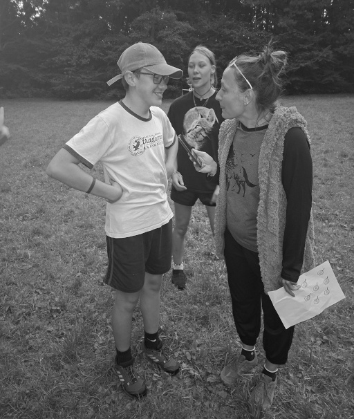
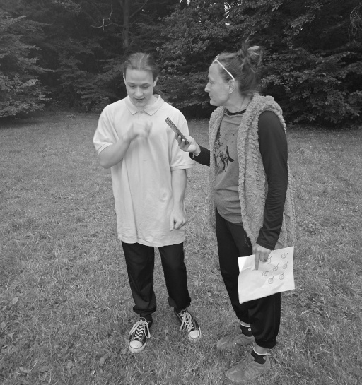
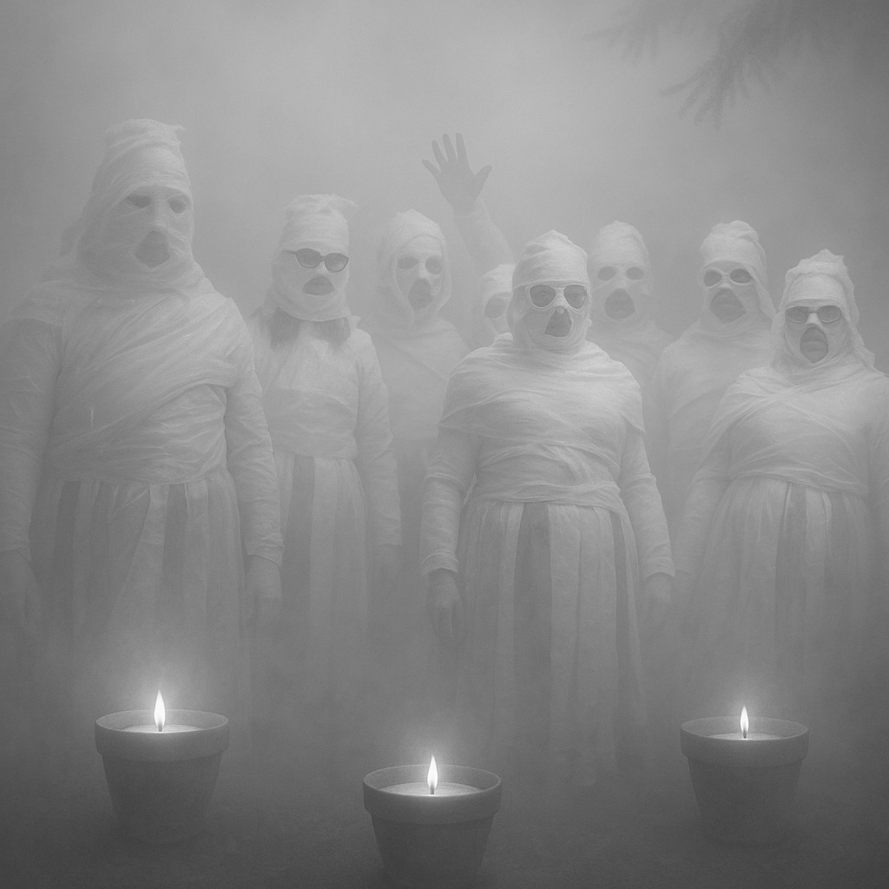

Sedelská pravda
Fakta, názory a konspirační teorie bez repelentu
Fakta, názory a konspirační teorie bez repelentu
Když se začaly množit zprávy o mizejících osobách a brutálních vraždách, atmosféra v Sedle se stala napjatou a tísnivou. Redakce našeho listu nemohla zůstat stranou. Vypravila jsem se osobně mezi mladé detektivy, kteří den co den zkoumají nové stopy, analyzují nalezené důkazy a dávají dohromady mozaiku záhadného příběhu. Tentokrát se vše točilo kolem otisků prstů – možná nenápadných, ale zcela zásadních stop, které mohou usvědčit každého pachatele. Co si o tom myslí samotní vyšetřovatelé? Jak pracují? A kam podle nich směřuje celé vyšetřování?
Sedlo – Vrch Bída byl v neděli svědkem tragické události. Policie potvrdila, že muž nalezený v lesním porostu nedaleko turistické stezky byl zastřelen. Redakci Sedelské Pravdy se podařilo zjistit, že obětí je dlouholetý porybný Jaroslav Radimský (63).
Střelba, ke které došlo v brzkých odpoledních hodinách, otřásla návštěvníky, kteří si na oblíbeném vrchu užívali poklidné pohody. „Slyšeli jsme prásknutí, a pak někdo křičel,“ uvedla pro Sedelskou Pravdu svědkyně, která si nepřála být jmenována. Místo bylo okamžitě uzavřeno a na příkaz krajského velitelství bylo uvaleno informatiční embargo.
Podle nejnovějších informací, které máme k dispozici, byla na místě činu nalezena smrtící kulka. Ta byla podrobena balistickému zkoumání a výsledek je šokující: náboj je z pistole Walther P38. Přesně té zbraně, co byla dopoledne téhož dne odcizena.
SEDLO – Úterní noc se na místním hřbitově nesla v duchu egyptského šílenství. Skupina podivně nadšených dospělých, kteří si říkají „Synové a dcery přechodu“, se oblékla do toaletního papíru a uspořádala rituální mumifikační tančírnu mezi hroby.
Podle svědků byl celý prostor osvícen svíčkami v keramických květináčích a účastníci v rozličném stádiu zabalení do papíru se pokoušeli tančit „posmrtný tanec radosti“, zatímco z přenosného reproduktoru zněly staré egyptské popové hity.
Redakce: Dobrý den, tady Sedelská pravda, redakce, můžeme se vás zeptat na pár otázek?
Tak prosím vás, co tady děláte, já jsem myslela, že vy jste…
Ella: Odděláváme si šichtu.
Redakce: Takže to je test psychické zdatnosti pro detektivy, co vy tady děláte?
Ella: momentálně nemáme, nemáme…
Redakce: Pardon, co jste dneska řešili?

Ella: Dneska jsme řešili případ shořelé vlastně kůlny, byla to nějaká kůlna kousek v lese za vedlejším tábořištěm,
Tonda: Shořelý sklad a snažili jsme se najít zuby komu patřily.
Ella: Nebo ostatky.
Redakce: A co jste zjistili?
Ella a Tonda: Snažili se zjistit, co je to za bytost, zjistili jsme, no velikost, no kolik chybělo zubů, kolik měl plomb.
Ella: Domníváme se původce toho, samozřejmě mohla to být úplně jiná osoba.
Redakce: My tady máme ještě pána z jiné skupiny, prosím vás, prý jste podezřelý?
Matěj: To není pravda.
Redakce: A jak je to možný, že vás podezřívají?
Matěj: Nevím, to je samozřejmě výmysl.
Redakce: A jak to vyloučíte
Matěj: Zatím nevím
Redakce: Vy jste se také dneska zúčastnil nějakého vyšetřování?
Matěj: Ano.
Redakce: A jakého?
Matěj: Vyšetřování zaprvé shořelého skladu, kde jsme našli jen 26 zubů.
Redakce: A ještě něco jste dneska řešili?
Matěj: A potom tu vykradenou, vykradené muzeum.
Redakce: K čemu jste došli?
Matěj: K tomu, že jsem podezřelý.
Redakce: Aha, no to se bude těžko vyvracet, že jo?
Matěj: Asi jo.
Redakce: Děkuji.
Redakce: Dobrý den, tady je redakce Sedelské pravdy, můžeme se vás zeptat na pár otázek?
Detektivové: Ano.
Redakce: Vy jste prý dneska řešili nějaký případ u muzea, můžete nám k tomu něco říct?
Viki: Vy jste pošta?
Redakce: Ne, já nejsem pošta, já jsem paní redaktorka.
Viki: Jo aha, vy jste novinářka!
Redakce: Ano.
Viki: Joo!
Redakce: A už mi odpovíte?
Viki: Ano, ano, byly jsme tam.
Redakce: No a co jste tam vyřešili u toho muzea?
Týnka: No vlastně v tom muzeu ukradli pistol, akorát si nepamatuju, jak se jmenuje.
Viki: Ano water…
Bětka: Walther P38.
Týnka: No a byly tam otisky a zjistili jsme, že to je jistá paní, jak se jmenuje,… paní Nováková, žádná Nováková, Dvořáková
Redakce: Jako že, pachatel je paní Dvořáková nebo otisky byly paní Dvořákové?
Bětka + Viki: Její byly ty otisky.
Redakce: A můžu se zeptat, když jste našli ty otisky, báli jste se, že je zničíte?
Bětka: Ne, protože jsme měli v týmu šikovnou holku, takže to znala.
Redakce: A byla ta šikovná holka některá z vás?
Viki: Já.
Redakce: Děkuji moc za rozhovor.
Redakce: Dobrý den, pane brankář, tady Sedelská pravda, můžeme se vás zeptat na pár otázek? Máte chvíli čas?
Jáša: Já teďka, teďka zatím, jako, jedeme jednu hru, nevím.
Redakce: Já se vás zeptám, než přiběhne míč k nám sem, vy jste dneska vyšetřovali nějaký případ?
Jáša: Ano.
Redakce: A o co se jednalo?
Jáša: Jednalo se o myslím, že to byla…..
Redakce: Pane detektive neříkejte mi, že jste zapomněl, co jste dneska dělali?
Jáša: Vyřešili jsme shořelou boudu.
Redakce: Hm, co jste tam objevili v té shořené boudě?
Jáša: Že jsme tam objevili, koho zuby to jsou a kdo tam zemřel.
Redakce: A řešili jste ještě dneska něco dalšího?
Jáša: Byly jsme v Sedelském muzeu a…
Redakce: Povídejte, já myslím, že nám ten gól nedají.
Jáša: To se bojím trošku.
Redakce: Co jste zjistili v tom muzeu?
Jáša: Nějaký informace jako, tam bylo rozbitý okno a byly tam otisky.
Redakce: Děkuji, děkuji.
Redakce: Dobrý den, Sedelská pravda, je těžké sejmout otisky prstů?
Šárka: …
Redakce: Děkuji za odpověď.
Redakce: Můžu se vás zeptat, co je to daktyloskopie?
Martin: To kdybych věděl.
Redakce: Dobře, já se zeptám támhle kolegy…
Redakce: Pane kolego Sedelská pravda, můžu se vás zeptat na nějaké otázky, co jste dneska řešili?
Vojta: Jak co jsme řešili?
Redakce: No slyšela jsem něco, že jste byli v muzeu, co tam bylo zajímavého?
Vojta: Rodeo, hledali jsme to… Zbraňu.
Redakce: V muzeu? A našli jste ji?
Vojta: Ne, protože ji ukradli.
Redakce: A víte někoho podezřelého, kdo ji mohl ukradnout?
Vojta: Nemáme tušení, jakoby.
Redakce: Hm, a s kým jste mluvili v muzeu?
Vojta: No nějakou Danou Dvořákovou, jakoby hlídač, nemůžu reportuju mo… to jako, jako, takhle máme takový čtyři pluky detektivů jo, jsme fialový a jakoby.
Redakce: Prosím vás mluvte k věci, abyste nedostali gól.
Vojta: A dostali jsme nebo takhle při nástupu našich detektivů jsme ukázali, že jsme se ptali na nejvíc užitečných dotazů ze všech, takže to, ale zjistili jsme, že máme jistej popis určitýho, který se ochomýtal u tý zbraně, no.
Redakce: Dobrý den, Sedelská pravda, zjistili jste, kdo ukradl tu zbraň?
Filip: Ne ani moc ne.
Redakce: Ani moc ne, to jako že vůbec ne nebo možná trochu?
Filip: Možná trochu.
Redakce: Aha děkuji.
Redakce: Co se týče případu z dnešního rána s vyhořelou kůlnou, tam jste zjistili něco, máte nějaké poznatky?
Filip: No tak, na to, že to byla kůlna toho shořelo docela dost.
Redakce: A našli jste tam něco?
Filip: Ano myslím, že 27 zubů.
Redakce: 27 zubů, aha, hmmm.
Redakce: Pane, pane tady černý, co byste řekl vy k dnešním případům?
Pepík: No bylo to zajímavé v muzeu, bohužel nebylo otevřeno, abysme mohli prohlédnout místo činu úplně, ale naštěstí jsme našli otisky prstů.
Redakce: Máte tušení komu patřily?
Pepík: Ano, tý hlídačce.
Redakce: A jak se hlídačka jmenuje?
Pepík: Dana dvořáková.
Redakce: Moc děkuji za rozhovor.
Redakce: Madam, mohla byste nám také dneska něco říctk případu vyhořelý sklad?
Eliška: Byl hrozně špatnej.
Redakce: A co tam na tom bylo špatnýho?
Eliška: Nebyly zásoby.
Redakce: Všechny zásoby shořely?
Eliška: Ano.
Redakce: A byl tam nějaký hlídač?
Eliška: To netuším, ale podle mě ne.
Redakce: A našli jste tam něco?
Eliška: Jo zuby.
Redakce: A tušíte komu patřili?
Eliška: Jo.
Redakce: Komu?
Eliška: Neptamatuju si.
Redakce: Dobře, děkuji za rozhovor.
Dobrý večer,
Píší režiséři V. Bukovský a J. Caudr připravované divadelní hry, která bude představena u táborového ohně v pátek večer. Rádi slyšíme, že naše přípravy už teď vyvolávají vzruch a chtěli bychom vám dát malou nápovědu k připravovanému dílu: Oheň - princezna.
Hezký zbytek večera a zamyslete se
J. Caudr, V. Bukovský a všichni herci :)
„Myslela jsem si, že se mi vrátila babička,“ sdělila nám obyvatelka Sedla, která šla na hřbitov zalít květiny a našla tam křepčící mumie. „Bylo to zvláštní, ale vlastně docela vtipné. Jen jsem se bála, že mi někdo ukradne květináč s muškáty.“
Zásah policie přišel krátce po půlnoci. Přivolaná hlídka se nejprve pokoušela mumie slovně uklidnit, ale poté, co jedna z nich začala předčítat z „Knihy mrtvých“, došlo ke zklidnění situace za použití obecní hasicí techniky.
Místo klasické pokuty bylo členům spolku uloženo vykonat veřejně prospěšné práce s výchovným přesahem. Podle radnice budou v následujících týdnech:
Mluvčí skupiny, paní H.H. (redakce jméno zná), se hájila slovy: „Měli jsme jen potřebu vyjádřit úctu k minulosti... a trochu se vyvázat ze současnosti.“
Obec zatím zvažuje, zda nevyhradit pro podobné „rituály“ severní část pole u křížku, kde už nyní parkují tři karavany a jeden papírový sarkofág.
Policie zatím oficiálně nepotvrdila, zda existuje spojitost mezi krádeží zbraně a vraždou porybného Radimského. Faktem však zůstává, že časový sled událostí i typ použité munice na takovou souvislost jednoznačně ukazují.
Naši redaktoři dále zjistili, že Radimský byl v obci známý jako tichý a samotářský muž, který většinu času trávil v okolí sedelského rybníka. Jeho smrt tak zasáhla nejen jeho blízké, ale i celou komunitu, která si ho pamatovala jako milého a ochotného člověka.
Trpaslík přijde do knihovny a ptá se knihovnice:
„Máte něco o diskriminaci trpaslíků?“
„Ano, máme,“ odpoví knihovnice,
„támhle na horní polici.“
Naši redaktoři dále zjistili, že Radimský byl v obci známý jako tichý a samotářský muž, který většinu času trávil v okolí sedelského rybníka. Jeho smrt tak zasáhla nejen jeho blízké, ale i celou komunitu, která si ho pamatovala jako milého a ochotného člověka.
Trpaslík přijde do knihovny a ptá se knihovnice:
„Máte něco o diskriminaci trpaslíků?“
„Ano, máme,“ odpoví knihovnice,
„támhle na horní polici.“
Redakce: Paní Bruštíková, můžete našim čtenářům přiblížit, jak začala vaše poslední výprava?
Kateřina Bruštíková: Začalo to jako úplně běžná expedice. Měli jsme mapu, několik podezřele přesných záznamů z 19. století a čtyři velbloudy, z nichž jeden trpěl alergií na písek. Cíl bylo naleziště v oblasti Such-Hetep, kde měl být ukryt fragment desky z Per-Ba’an, legendárního egyptského chrámu z doby před tisíci lety.

Redakce: A našli jste ji?
KB: Našli. Byl to plochý kámen zasazený do podlahy chrámu – starý, popraskaný, s nápisy ve třech jazycích. Když jsme ho očistili, v chrámu na okamžik zhasly všechny naše světla. Ne vítr. Ne závada. Prostě tma. A pak – zpod podlahy se ozval dětský smích. Takový ten jemný, táhlý. Znělo to, jako kdyby se někdo smál přes staletí.
Redakce: Smích?
KB: Jo. A pak už jen ticho. Po chvíli se světla rozsvítila sama od sebe. Náš tým se shodl, že to byla jen akustika. Já ne. Mám pocit, že jsme desku neobjevili, ale že ona si nás vybrala.
Redakce: To je opravdu zvláštní příběh. Došlo na vaší výpravě k nějakým dalším podivnostem?
KB: No ano. Hned druhý den jsme narazili na skupinu malomocných poutníků, kteří putovali přes poušť k posvátnému místu zvanému Kamen Jarmoket. Legenda říká, že kdo sem dojde s čistým srdcem a vysloví svoje jméno, tak se uzdraví.
Neměli to lehké, to víte, malomocenství je připravilo o různé části těla a některé i o zrak. Měli jen pár hadrů a dřevěné hole, ale byli šťastní, že se dostali tak daleko.
Redakce: Pomohli jste jim?
KB: Samozřejmě. Nabídli jsme jim vodu a jídlo. Nejvíc je však zaujala deska. Když ji viděli, začali se smát, a pak zpívat a tančit. Bylo to šílené – jako kdyby se vrátili do doby, kdy ještě nebyli nemocní. A pak nám řekli, že kámen je posvátný a že nás požehnal.
Na horním toku Sedelského potoka probíhá rozsáhlá vodohospodářská akce, která nemá ve světě obdoby. Mladí stavitelé započali s výstavbou
přehrady, jež má zadržovat přívalové srážky, ochlazovat okolí a přispět k celkovému zvelebení krajiny.
Celý projekt byl iniciován spontánním rozhodnutím místních mládežnických kolektivů. Plán hráze vznikl během jediné odpolední porady, po níž se bez otálení chopili práce. Již během prvního dne bylo navršeno 48 kbelíků zeminy a osazeno čelo hlavní hráze dubovými klacky.
„Nechceme čekat, až nám někdo postaví přehradu. Postavíme si ji sami,“ uvedl stavbyvedoucí D.V.
Záměr má i podpůrný ekologický přesah – kolem přehrady má vzniknout přírodní mokřad, který přispěje k biodiverzitě celého údolí. Již nyní se do lokality stahují rosničky, čolci a komár pisklavý (Culex pipiens), který se zde zabydlel v hojném počtu.
Zástupci místní samosprávy projekt sledují s obdivem. „Takový entusiasmus a pracovní nasazení jsme tu nezažili od výstavby budovy obecního kina,“ uvedl s úsměvem vedoucí kulturní komise Helena Zavadilová. Lokalita se stává oblíbeným cílem výletů a procházky kolem tůně jsou nyní nedílnou součástí každodenního života obyvatel Sedla.
Možná jsi to už někdy zažil – tmavá ulička, divný týpek a žádný prostor na únik. Jindy si namachrovaná banda troubů myslí, že tvůj kamarád je boxovací pytel. Ano, svět je plný nebezpečí a ne z každého se dá vykecat. Někdy ti nezbyde nic jiného, než se postavit na zadní a ukázat, že nejsi jen další oběť. V takovém případě je dobré vědět, jak alespoň sevřít pěst.
Sebeobrana však není jen o úderech a kopancích. Ve skutečnosti to začíná mnohem dřív – správným postojem, klidným hlasem a schopností nedostat se do problémů. Sebeobrana tě učí rozpoznat nebezpečí včas a zmizet dřív, než začne jít do tuhého. A když už dojde na lámání chleba (nebo nosu), pomůže ti bránit se chytře – s co nejmenší námahou a co největší efektivitou.
Pokud tě přepadnou v jídelně kvůli poslednímu borůvkovému knedlíku? Pak se bij jako lev, protože není nic horšího, než když ti někdo sebere tvůj oblíbený dezert! 😄
Zítra odpoledne si procvičíme pár základních technik, které ti třeba jednou pomohou. A pokud ne, tak určitě zahřejí a pobaví.
Klidné ráno v chalupě na kraji lesa narušil podivný telefonát. „Budulínek zmizel,“ hlásila plačící babička. Měla jsem podezření, že v tom bude liška. Ta se v okolí už několikrát motala — slibovala dětem svezení na ocase výměnou za hrášek. Tentokrát zašla dál.
Na místě činu jsem našel nedojedené zbytky polévky, otevřené okno a na stole pár kuliček hrachu. Žádné stopy boje, jen dětská židlička převrácená dozadu. Klasický únos.
Začal jsem výslechy. Děda nic neviděl, byl na trhu. Babička tvrdí, že Budulínkovi opakovaně říkali, ať nikomu neotvírá. „Ale liška mluvila vždycky tak mile,“ vzlykala. Zvířátka z lesa potvrdili, že viděli červený ocásek mířit k doupěti u starého dubu.
Večer jsme vyrazili s posilami — tři bubny a hodně hluku. Liščí doupě se otřásalo, divže se celé nezhroutilo. Po chvíli vylezla liška — uražená, ale neškodná. „Já ho jen učila zodpovědnosti,“ tvrdila. Budulínek vyšel sám, trochu špinavý, ale v pořádku.
Případ uzavřen. Budulínek dostal za trest domácí vězení a liška musí na pouti vozit děti na ocásku zadarmo. A já? Já si zase jednou mohu oddechnout a jít se pořádně prospat.
Na jazyku slovo žádné,
přesto se hýbu stále.
Jsme pár, co tě vždy nese,
v dešti, sněhu i na plese.
S prvním světlem v dál se vinu,
v poledne téměř zahynu.
Když den jde spát a soumrak sílí,
jsem stejně dlouhý jak v ranní chvíli.
Název: Sedelská pravda
Vydavatel: Sedlo Media Group, s.r.o.
Adresa: Sedlo 47, Česká republika
Email: info@sedelska-pravda.cz
Telefon: +420 123 456 789
Šéfredaktorka: Karolína Bukovská
Výkonný redaktor: Michal Bukovský
Redakce: Lucie a Bohumil Borešovi
Grafická úprava: Michal Bukovský
Tisk: Česká Tiskárna a.s., Nová Bystřice
Datum vydání:
Číslo vydání:
© 2025 Sedlo Media Group. Všechna práva vyhrazena.
Jakékoli šíření obsahu bez svolení vydavatele je zakázáno.